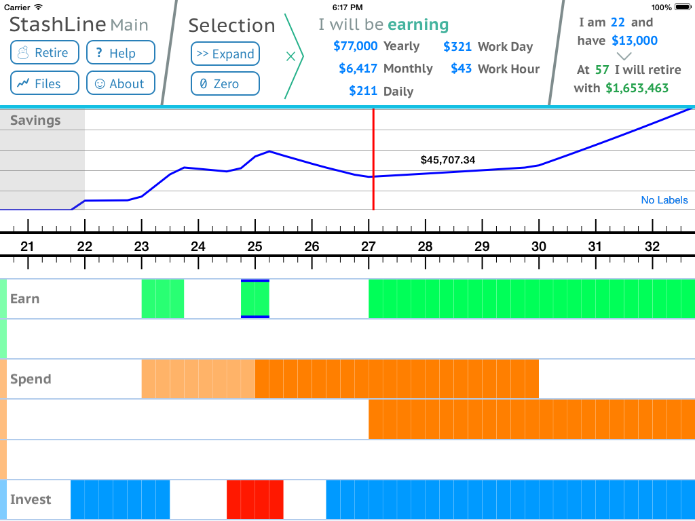
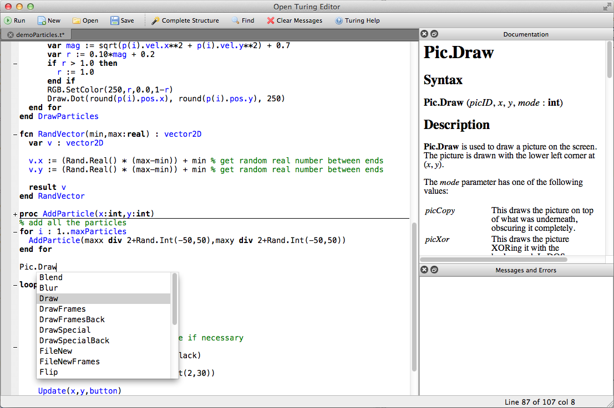
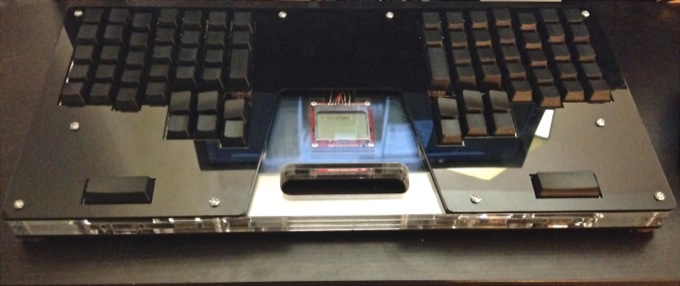
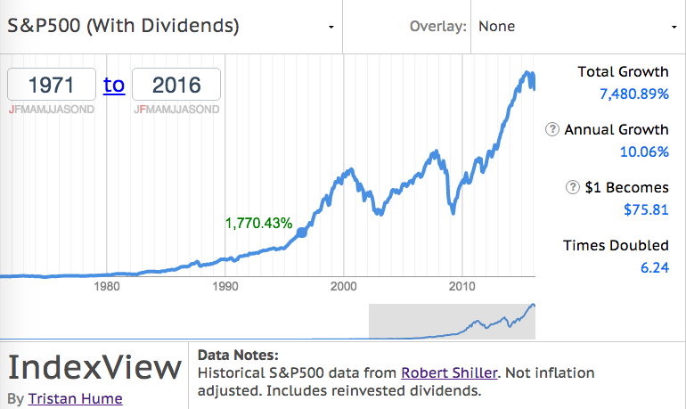

{% assign firstprojects = 5 %}
<div class="container">
  {% assign sidebar = site.data.sidebar.onepage %}
  {% include sidebar.html %}
  <div class="main">
    {% for section in site.data.resume %}
      {% if section[0] != 'Projects' %}
        {% include section.html %}
      {% endif %}
    {% endfor %}
  </div>
</div>
<div class="container right-image-item">
  <div class="main last-no-padding">
    <h2 style="margin: 0px;">Selected Projects</h2>
    {% assign imagewidth = 80 %}
    {% assign sectioncontent = site.data.resume['Projects'] | slice: 0, firstprojects %}
    {% include plainsection.html %}
  </div>
  <div class="right-image">
    <br>
    <br>
    <br>
    <br>
  </div>
</div>
